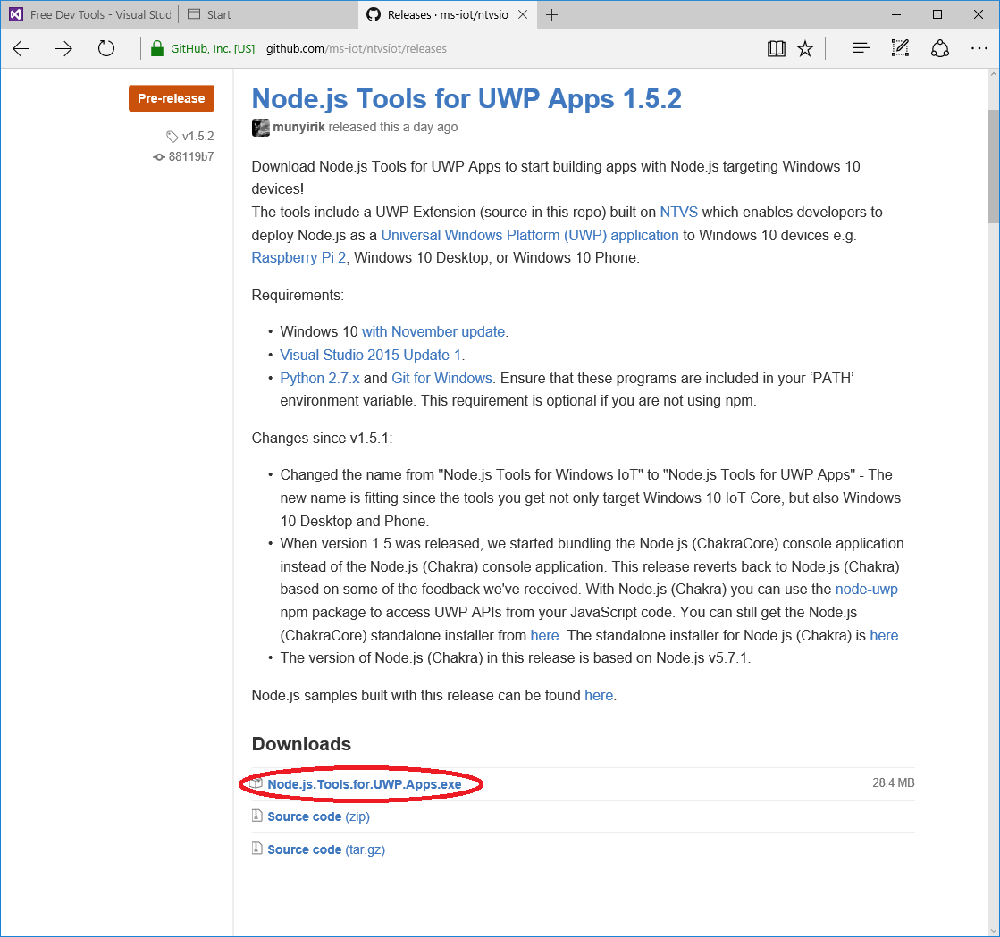

Raspberry Pi 2 Configuration:
Install Visual Studio from the following link:
- Choose custom installation and select the options below
- Check Universal Windows App Development Tools
- Check Cross Platform Mobile Development
- Check Common Tools
(if you already have Visual Studio installed then use "uninstall or change a program" in the control panel to modify Visual Studio and make sure the items below are checked):- Install python 2.7(only 2.7 works, 3 does not work yet)
- Download and install the Node.js Tools for UWP Apps
- Start Visual Studio
- Create a new Project
- Select Javascript -> Node.js -> Blank Node.js Web Server (Universal Windows)
- Choose npm -> Install New npm Packages
- install local express npm package
- Select Project -> Properties
- Put in remote machine ip address or machine name - save the file
- Get files from GitHub
- git clone https://github.com/jennparise/win10iot-nodejsserver-sample.git
- Copy the server.js file from the files you just downloaded and replace the server.js in the Visual Studio Project
{kind=link}
{kind=link}

https://github.com/ms-iot/ntvsiot/releases


- Choose to run "Remote Machine" with Debug Arm selected
A pop up may appear warning about developer mode

At this point you can use Postman to test the server.
Or use the cordova/ionic project located here in my github